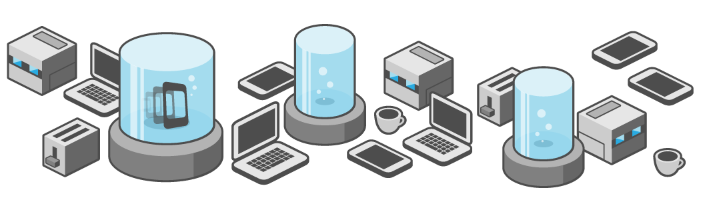

Historia

Inicialmente, fue desarrollado por Nitobi bajo licencias de software libre, pero para Octubre de 2011 Adobe anunció oficialmente la adquisición de Nitobi, pasando, así PhoneGap al control del gigante del software, gran interesado en la evolución de HTML5. Esto generó una gran incertidumbre entre los desarrolladores, pues el framework podía pasar a ser una tecnología propietaria, pero en una genial estrategia, Adobe donó PhoneGap a la fundación Apache, conservando de esta forma la integridad libre de PhoneGap.
En la actualidad, el proyecto en el sitio web de la fundación Apache esta nombrado como: "Apache Cordova", pero PhoneGap sigue siendo una especie de marca comercial, por lo que aún se sigue usando ese nombre para identificar al popular framework- Puedes encontrar más información de PhoneGap en la siguiente dirección www.phonegap.com, donde podrás descargar la última versión del framework que al escribir este artículo es la 1.7.0.
Jorge Luis Lopez Perez - Marzo 2019
Caracteristicas
.png)
Phonegap permite crear actualmente aplicaciones móviles para: iPhone, Android, Windows Phone, Blackerry, Blackberry 10, webOS, Symbian y Bada
Las APIs que proporciona PhoneGap son:
- Acelerómetro
- Cámara
- Compás
- Contactos
- Sistema de Ficheros
- Geolocalización
- Media
- Red
- Notificaciones (alertas, sonido, vibración)
- Almacenamiento
Las aplicaciones creadas con PhoneGap sólo pueden nutrirse de HTML, CSS y Javascript. Si requieren lógica generada por otros lenguajes de programación, deberán conseguirla de un backend a través de APIs o webservices
Ofrece un servicio en la nube llamado PhoneGap Build que permite construir rápidamente apps móviles y compilarlas con facilidad sin necesidad de SDKs, compiladores o hardware específico.
Tiene una licencia Apache 2.0
Jorge Luis Lopez Perez - Marzo 2019
¿Qué es PhoneGap?

Adobe PhoneGap es un framework para el desarrollo de aplicaciones móviles producido por Nitobi, y comprado posteriormente por Adobe Systems.34 Principalmente, PhoneGap permite a los programadores desarrollar aplicaciones para dispositivos móviles utilizando herramientas genéricas tales como JavaScript, HTML5 y CSS3.
Jorge Luis Lopez Perez - Marzo 2019